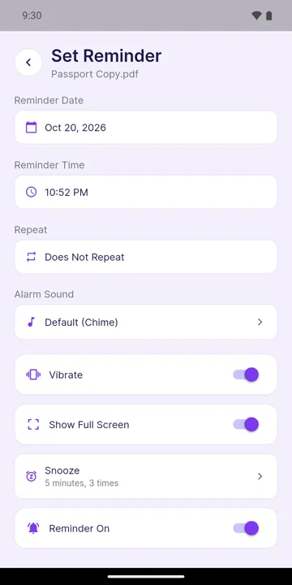

Home › Guides › Document expiry dates
How to remember document expiry dates
Keep the document and its reminder together, set the reminder weeks before the date, and make it repeat every year. Then the renewal finds you – not the other way round.
Why expiry dates get missed
Insurance policies, vehicle documents, licences, passports, rent agreements and warranty cards each have a different date, and the paper or PDF usually lives somewhere other than the calendar entry. When the reminder finally comes, you still have to hunt for the document. The fix is to keep both in one place.
A method that works
- Collect the documents. Photos or PDFs of each policy, licence or agreement.
- One folder per area. For example Vehicle, Insurance, Home Papers, IDs.
- Name files with the date. "Car insurance – expires 2027-03-14" makes search instant.
- Remind early. 30 days before for renewals that need paperwork, 7 days for simple ones.
- Repeat yearly for anything that renews every year, so you set it only once.
Doing it in Save Files & Set Reminders (Android)
- Open My Documents, create a folder and add the PDF or photo.
- Tap the bell on the document.
- Pick the date and time, set Repeat → Yearly, choose a sound and snooze length.
- When it rings – even on a locked phone – tap Open Document to see the policy straight away.


Good to know
- Allow notifications and "Alarms & reminders" so the alarm can ring on time. Some phones' battery settings delay alarms – allow background running if asked.
- Files are stored on your phone. Use Backup Now (manual, to your own Google Drive) before changing or resetting your phone. How backup and restore work.
- The app reminds you; it does not renew anything or contact insurers or government offices.
Related: Organise important documents on Android · FAQ